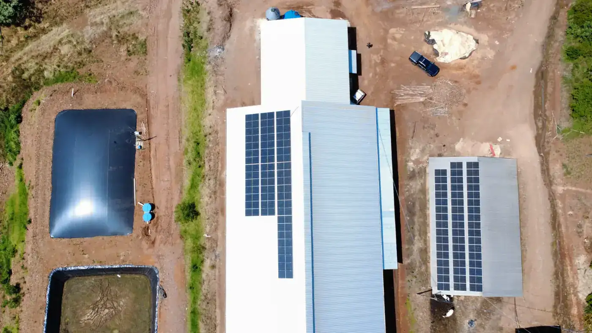
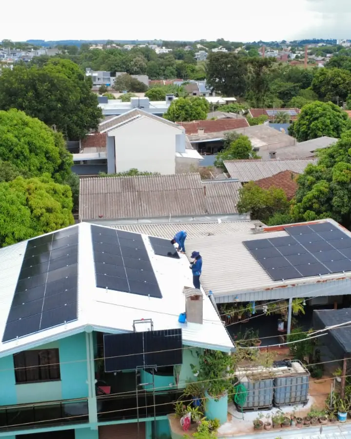

Financiamento energia solar em Corbélia: projeto, instalação e homologação
Até 90% de economia na conta de luz
Atendemos Corbélia com equipe própria, a partir da nossa sede em Medianeira. Projeto elétrico assinado, ART no CREA-PR e homologação completa junto à Copel - do protocolo inicial até a troca do medidor bidirecional. Orçamento calculado a partir da sua fatura real, sem estimativa de tabela.
Resposta em poucos minutos no horário comercialFinanciar energia solar em Corbélia: como a conta fecha
No financiamento, o dinheiro que ia para a Copel passa a pagar o sistema, com prazo para acabar. Depois da última parcela, a economia fica toda com você, e os módulos seguem com garantia de desempenho até completar 30 anos.
Em Corbélia, a casa da cidade costuma ter telha cerâmica e o aviário do interior, chapa metálica. O aviário gasta energia o ano todo, sem pico de safra, e isso deixa o retorno do financiamento mais previsível. O produtor pode usar o crédito rural do Plano Safra, e quem é da agricultura familiar entra pelo Pronaf com o CAF. Casa e comércio usam as linhas de bancos e cooperativas, com prazo que pode chegar a 120 meses. Em todo projeto rural, conferimos antes a classe tarifária na Copel.
Compare a parcela com a economia líquida, que é o quanto a conta cai de fato depois da taxa mínima, da iluminação pública e do Fio B. Na simulação, a parcela aparece ao lado desse valor, e não da conta cheia.
Quem aprova o crédito é o banco ou a cooperativa. A M&A monta a parte técnica que eles pedem: projeto elétrico, ART, orçamento por equipamento e a geração prevista.
Quer saber quanto sobraria da sua conta em Corbélia?
Envie uma foto da sua fatura de energia. Devolvemos o cálculo de economia, o investimento estimado e o tempo de retorno para Corbélia e região.
Enviar minha conta de luz
Que linhas de crédito o morador de Corbélia pode usar
Para pessoa física e empresa, bancos e cooperativas de crédito têm linhas próprias para energia solar, com prazo que pode chegar a 120 meses e carência no começo. Normalmente o próprio sistema fica como garantia.
No campo, que responde por metade do valor adicionado de Corbélia (IBGE, 2021) e por 180 dos 756 sistemas solares do município (ANEEL), entram as linhas de crédito rural do Plano Safra. O Pronaf é para a agricultura familiar e pede o CAF, cadastro que substituiu a antiga DAP.
Taxa e prazo mudam de banco para banco e de safra para safra. Por isso a simulação usa a condição que estiver valendo no dia do seu pedido, e não publicamos taxa no site.
Dá para pagar à vista ou dar uma entrada e parcelar o resto. O sistema é dimensionado do mesmo jeito em qualquer caso.
O que o banco costuma pedir
Cada banco tem a sua lista. Estes documentos aparecem em quase todas.
Fatura de energia
As contas de luz mais recentes do imóvel que vai receber os módulos.
Projeto e ART
Projeto elétrico e ART assinados pelo engenheiro. Essa parte a M&A entrega.
Orçamento detalhado
Proposta com marca, modelo e preço de cada equipamento e do serviço. Também sai da M&A.
Documentos do titular
RG e CPF, ou contrato social e documentos dos sócios quando o pedido é da empresa.
Comprovação de renda
Comprovante de renda, declaração do imposto de renda ou faturamento da empresa.
Documentos rurais
No crédito rural, o CAF quando a linha exigir e a matrícula da terra ou o contrato de arrendamento.
Exemplos ilustrativos de dimensionamento em Corbélia
Três perfis de consumo comuns na região, com potência, economia mensal projetada e prazo de retorno estimados para dar ordem de grandeza; o seu projeto é calculado com a sua fatura.
Parcela ao lado da economia
Numa casa que gasta 400 kWh por mês, a economia projetada fica perto de R$ 340. A simulação procura o prazo em que a parcela chega perto desse valor.
Aviário de 10.000 aves
Um aviário com 2.800 kWh por mês de ventilação, aquecimento e comedouros fica perto de 28 kWp em telhado metálico. A economia projetada é de uns R$ 2.380 por mês e o retorno chega por volta do quarto ano. Para o banco, a M&A entrega o projeto, a ART e o orçamento por item, depois de conferir a classe tarifária da unidade.
Crédito rural para a propriedade
Numa propriedade que gasta 2.800 kWh por mês, comum em aviário, o crédito rural pode ter prazo e carência acertados com a época de venda da produção.
Sua conta em Corbélia passou de R$ 400?
Nesse patamar, o sistema costuma se pagar em menos de cinco anos. Vale calcular antes do próximo reajuste da Copel.
Quem instala energia solar em Corbélia
Em outubro de 2026, a ANEEL registrava 756 sistemas de energia solar conectados à rede em Corbélia, somando 19,2 MW de potência instalada.
São 457 sistemas residenciais e 117 de comércio e indústria, público que em geral usa linhas de bancos e cooperativas de crédito.
Outros 180 estão em unidades rurais, que podem acessar o crédito rural. A potência típica no campo é de 24,8 kW (mediana), contra 6,0 kW nas residências, o que ajuda a explicar financiamentos de valor maior.
Fontes: ANEEL, Relação de Empreendimentos de Geração Distribuída (dados de outubro de 2026).
Marcas com representação e assistência no Brasil
Garantia de 30 anos só tem valor se existir estrutura para acionar. Trabalhamos com fabricantes que mantêm suporte em território nacional.
Módulos fotovoltaicos
O banco quer saber o que está financiando. A proposta traz marca e modelo dos módulos de 620 W (Ronma, Gokin ou ERA), com 15 anos de garantia contra defeito e 30 de desempenho, prazo mais longo que o de qualquer financiamento.
Inversores
O inversor também vai descrito para o banco: Sofar de 5 kW, 10,5 kW ou 30 kW, ou Auxsol de 7,5 kW, de acordo com a potência e com a ligação, monofásica ou trifásica. Todos têm proteção IP65 ou IP66 e mostram a geração no aplicativo.
Estruturas de fixação
Alumínio anodizado e parafusos em inox 304, dimensionados para a carga de vento da região conforme NBR 6123. Fixação sem furo desnecessário.
Proteções elétricas
String box com DPS, fusíveis e disjuntores conforme NBR 16690 e exigências da Copel. É o item que a concorrência mais corta para baixar preço.
Monitoramento
Aplicativo com geração em tempo real, histórico por período e alerta automático em caso de falha. Você acompanha do celular e nossa equipe recebe o mesmo alerta.
Cabeamento solar
Cabos com dupla isolação e proteção UV, conectores MC4 originais e crimpagem com ferramenta específica. Sem emenda improvisada exposta ao sol.
Veja as marcas e os modelos de módulos e inversores que instalamos hoje
Da simulação à liberação do crédito
A aprovação do crédito é do banco. A parte técnica fica com a M&A.
Simulação
Com a sua conta, dimensionamos o sistema e colocamos a parcela ao lado da economia líquida.
Escolha da linha
Você escolhe onde vai financiar, e explicamos o que aquela linha costuma pedir.
Documentação técnica
Mandamos ao banco o projeto, a ART, o orçamento por item e a geração prevista.
Análise do crédito
O banco analisa o pedido e define juros, prazo e carência.
Liberação e instalação
Liberado o dinheiro, marcamos a obra e protocolamos o pedido na Copel.
Clientes atendidos pela M&A
Registros de entrega feitos pela nossa equipe.


Perguntas sobre financiamento energia solar em Corbélia
Financiamento energia solar em Corbélia
A M&A Soluções Energéticas atende Corbélia com equipe própria, a partir da nossa sede em Medianeira. O deslocamento não gera sobretaxa: a visita técnica, a instalação e o comissionamento são realizados em dias consecutivos sem custo adicional para o cliente. A mão de obra da instalação tem garantia de 5 anos. O prazo final depende da Copel. A finalização do nosso serviço leva em torno de 45 a 60 dias.
O Oeste do Paraná tem condição de irradiação solar bastante favorável - média de 4,7 a 5,1 kWh/m²/dia ao longo do ano, superior à maioria dos países europeus onde a tecnologia já é amplamente consolidada. Em Corbélia, com perfil de grãos, essa irradiação é suficiente para compensar com folga o consumo anual da maioria dos perfis de instalação.
Além de Corbélia, atendemos com a mesma equipe as seguintes localidades:
- Cascavel
- Braganey
- Cafelândia
Não encontrou sua localidade? Entre em contato mesmo assim - atendemos com frequência municípios vizinhos e, dependendo do porte do projeto, o deslocamento não altera o investimento final.
À vista ou financiado
À vista
À vista não tem juros e o investimento volta mais cedo. Só vale se o dinheiro não fizer falta na reserva da família ou no caixa da empresa.
Financiado
Financiado, o caixa fica livre e a conta de luz vira parcela. Os juros deixam o custo total maior, e o retorno completo só vem depois da quitação.
Antes de assinar o financiamento, confira
- O custo efetivo total (CET), que soma juros, tarifas e seguro.
- Quantos meses de carência e quando vence a primeira parcela.
- Seguros e tarifas embutidos no contrato.
- A garantia exigida pela instituição.
- As condições de quitação antecipada.
- A parcela ao lado da economia líquida, nunca da conta de luz cheia.
Sua próxima conta de luz em Corbélia pode ser a última alta
Envie sua fatura pelo WhatsApp. Você recebe o estudo de viabilidade completo - sem custo e sem compromisso - com a economia projetada e o tempo de retorno do investimento.
Solicitar orçamento gratuito Atendimento humano · Seg a Sex · 8h às 18h · Sáb 8h às 12h